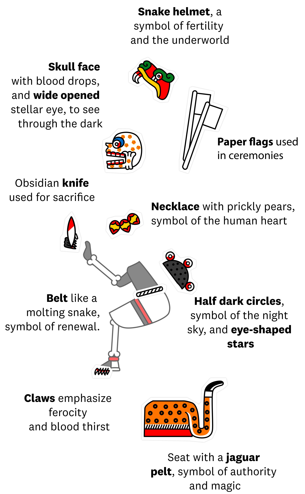
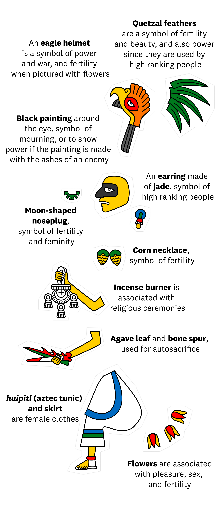

传统农耕节日的可视化研究
我对中国传统农耕节日的兴趣，始于童年时在乡下姥姥家的记忆。那时候，每逢二月二，姥姥总会在门槛上撒一道灰线，说是"引龙回"，能保一年不闹虫灾。我蹲在一旁看她做这些事，只觉得神秘又有趣，却从没想过这背后藏着几千年的农耕智慧。
后来在城市长大，那些节日渐渐变成了日历上模糊的符号。直到几年前做民俗调研，我才重新走进田野，看见苗族寨子里牛王节那天，耕牛角上戴着花环，主人捧着糯米饭一口一口喂它；看见哈尼族的长龙宴从山头摆到山脚，人们唱着歌感谢土地。那一刻，儿时的记忆突然被唤醒——原来这些节日不是死的传统，而是活着的仪式。
我翻遍了地方志、民俗学著作和散落在各地的民族志，像拼图一样，把春节、牛王节、龙抬头、二十四节气、尝新节、社日这六个农耕节日的脉络一点点理清。它们有的庆祝岁首，有的感恩耕牛，有的祈求雨水，有的品尝新米，有的祭祀土地——每一个节日，都是古人顺应天时、感恩大地的方式。
通过这组可视化作品，我想把这些散落在时间和空间里的节日碎片重新拼合，让更多人看见：我们的祖先如何在一年的轮回里，与土地对话，与季节共舞。也希望这些图像，能带你回到童年那个对世界充满好奇的自己，就像我回到姥姥家的那个二月二一样。
农耕节日的图像语言
中国传统农耕节日，在各地的民俗图像与仪式记录中，像是一套可以反复组合的文化符号。每一个节日都有其核心形态，再通过地域性的习俗、饮食、歌舞、祭祀等“象征配饰”来丰富表达。即便是同一个节日，在不同民族和地区也会呈现出截然不同的面貌——春节在陕西要谒庙敬神，在壮族地区则要吃五色糯米饭；龙抬头在南方是开犁祭龙，在北方却是撒灰驱虫。
研究者在梳理这些节日时也常常面临挑战：同样的祭祀仪式可能出现在不同节日中，相似的祈福行为可能指向不同的神灵。这些习俗就像会“换装”的文化符号，根据各地的自然环境、生产方式与民族信仰，自由组合、灵活表达。
下方呈现的六个节日可视化作品，正是基于这些散落在地方志、民俗调查和民族志中的图像与文字记录重新绘制而成。它们并非某个单一地区的忠实复刻，而是试图还原中国传统农耕节日的“符号语法”——让人们看见，在漫长的农耕文明中，我们的祖先是怎样用这些节日的仪式，与天地对话，与四季共生。
想象中的死亡之神

想象中的丰收之神

农耕诸神殿
这些符号可以在真实的农耕文化图像中找到，比如下面的137幅修复插图。
但是农耕神灵很少只与单一领域相关。相反，看似矛盾的领域，如生与死，往往体现在同一个神灵身上。
在成为一门追求客观准确的学术研究领域之前，历史本质上一直是由单一视角书写的。就我们的研究对象而言，面临着一个根本性困境：中国传统农耕节日的记载散落在浩如烟海的地方志、民俗志和文人笔记中，从未形成完整统一的图像谱系。历代统治者虽重视农事，却鲜有人像记录神灵那样系统地记录节日的视觉形态。更令人惋惜的是，许多珍贵的节俗图像资料在战乱与历史变迁中散佚，我们今天能看到的明清《耕织图》已是凤毛麟角。
所幸的是，近代以来一批民俗学先驱深入田野，抢救性地记录了大量农耕节日的活态传承。从顾颉刚的妙峰山调查，到钟敬文对民间节日的系统研究，再到凌纯声对边疆民族的田野考察，他们的工作为我们留下了宝贵的第一手资料。近年来，随着"二十四节气"被列入联合国教科文组织人类非物质文化遗产，以及"中国农民丰收节"的设立，农耕节日的学术研究迎来了新的生机。
农耕节庆通论
- 中国节日风情论,
- 寻根与铸魂：中华丰收文化研究,
- 中国传统节日传承机制与当代振兴路径研究,
区域与民族研究
- 稻作民族的典型农耕祭祀——以哈尼族梯田祭祀为例,
- 哈尼稻作梯田系统传统节庆的形态和价值,
- 仪式观视角下隆安稻神祭民俗的传播研究,
图像与视觉研究
- 中国古代农耕图像研究的理念与方法,
- 中国传统节气文化的图像叙事,
- 立春民俗的集体记忆与生活实践——基于清以来"春牛图年画"的图像研究,
研究中
目前我们整理了六个核心农耕节日——年节、牛王节、龙抬头、二十四节气、尝新节、社日的文献资料与图像元素。每一个节日都涉及复杂的仪式系统、饮食习俗、歌舞形式和地域变体。还有一批地方性节庆资料尚在整理中，因缺乏清晰的图像记录或时间所限，暂未纳入本次可视化呈现。
我们期待在未来不断完善和扩展这一研究。如果您对这个项目感兴趣，或拥有相关的民俗图像资料、地方文献线索，欢迎联系指正。谨此预先感谢您的帮助！
特别致谢
在研究过程中，特别感谢在云南、贵州、广西田野调查中给予热情接待的各民族乡亲，是他们让这些古老的节日仪式依然鲜活地存在于当下的生活之中。
推荐网站
中国民俗学网，民俗学研究者的学术家园，收录大量农耕节日田野报告
中国非物质文化遗产网，二十四节气等农耕节日遗产的官方展示平台
...